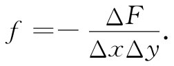
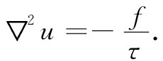

现在让我们来考虑一种完全不同的物理情况，不过它会再次给出相同的方程。设有一橡胶薄层——一张膜——铺在一个大的水平构架上而被拉紧（如一张鼓膜）。现在假设这张膜的一处被顶起，而在另一处被压下，如图12-3所示。对于这个表面的形状我们能够加以描述吗？即将表明，当膜的挠曲程度不太大时，这一问题如何才能解决。
图12-3 一橡胶薄层铺在一个筒形构架上而被拉紧（如一张鼓膜）。如果在该薄层A处被顶起，而在B处被压下，这个表面是什么形状？
由于膜被拉紧所以在膜内就会有力存在。要是在任一处造成一条小裂缝，则裂缝两边就会彼此互相拉开（见图12-4）。可见在薄层内有一种表面张力 ，如同拉紧弦线中的一维张力。对于如图12-4所示的那样一条裂缝，刚刚能够把缝的两侧拉在一起的单位长度 的力，我们定义为表面张力，其大小为τ。
图12-4 一张绷紧了的橡胶薄层，其中表面张力τ为垂直于一条线的单位长度的力
现在就来观察膜的一个垂直截面。它将表现为一个弯曲截面，如图12-5所示。设u为膜离开其正常位置的垂直方向位移，而x和y则分别代表水平面上的两个坐标（图上所表示的截面平行于x轴）。
图12-5 被挠曲了的膜片的横截面
试考虑长度为Δx而宽度为Δy的一小块表面。由于表面张力，所以将会有作用于该小块表面每一边的力。图上边缘1上的力将是τ1 Δy，其方向与该表面相切——也就是与水平线成θ1 角。边缘2上的力将在角θ2 的方向，为τ2 Δy（还有作用于该小块表面其他两个边缘上的相似之力，但这些我们暂不予理会）。从1与2两个边缘作用于该小块表面上的向上 的净力为
ΔF=τ2 Δysinθ2 -τ1 Δysinθ1 .
我们将只考虑膜的小畸变，也就是小斜率 范围。于是，sinθ便可用tanθ来代替，而tanθ又可写成∂u/∂x。因而力为
在方括号内的量也同样可以写成（对于小Δx而言）
作用在其他两个边缘上的力对ΔF也将有贡献，所以总力显然是
该鼓膜之挠曲是由外力引起的。让我们设f为由外力 引起的膜上单位面积 的向上 的力（一种“压强”）。当该膜处于平衡状态（静止 情况）时，这力必须被刚才所算出的内力即式（12.16）平衡掉。也就是说，

于是式（12.16）便可以写成
f=-▽·（τ▽u）. （12.17）
其中，▽目前所指的当然是二维的梯度算符（∂/∂x，∂/∂y）。我们就有一个把u（x，y）和所施力f（x，y）以及表面张力τ（x，y）——一般来说，膜中的τ是可以逐点改变的——联系起来的微分方程（一个三维弹性体的畸变也由一组相似的方程所支配，但我们将专注于二维的情况）。我们将仅仅关心表面张力τ在整张膜中为常数的那一种情况。于是，可以将式（12.17）写成
 （12.18）
这样就有另一个与静电学相同的方程了！——只是这回限制在二维上。位移u对应于ϕ，而f/τ对应于ρ/∈0 。所以无论是对于无限大的平面带电板、或两平行长导线、或带电的圆筒形导体，我们所做过的一切工作，均可直接应用到一张绷紧的薄膜上。
假设我们在膜的某些点上将膜推到一定高度 ——也就是说，在某些点上把u值固定下来，这就是在电的情况下，在各对应地方有一个特定势 的一种模拟。因此，比如我们可以用一个与筒形导体对应的截面形状的物体把膜推上去，因而形成一个正“势”。例如，若我们用一根圆棒把膜推上去，该表面便将如图12-6所示的形状。高度u与一带电圆棒的静电势ϕ相同。它是按ln（1/r）下降的（其斜率 ，对应于电场E，将按1/r下降）。
图12-6 一张绷紧的橡胶薄层用一根圆棒推上去时的横截面。函数u（x，y）与在一根很长的带电棒附近的电势ϕ（x，y）相同
一张绷紧的橡胶薄层，往往用来作为一种从实验上解决复杂的电学 问题的途径。这里，模拟是倒过来用了！各种不同的棒和杆被用来把膜推至对应于一组电极的势的高度。此后，对高度的测量就能给出在电情况下的电势。这一种模拟甚至被发展得更远。如果将一些小球放在膜上面，它们的运动会近似地对应于电子在相应电场中的运动。人们能够实际上观看 到“电子”在其轨道上运动。这一方法曾被用来对许多光电倍增管（诸如那些用在闪烁计数器上的，以及那些用于控制卡迪拉克牌汽车的车前灯光的）的复杂几何图形进行设计。这一方法目前仍被采用，但其准确度却是有限的。对于最准确的工作，更好的是通过数值计算法，即利用大型电子计算机把场求出来。